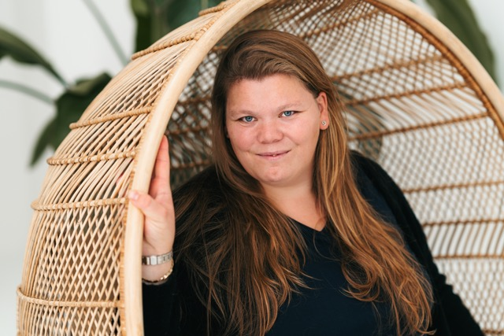
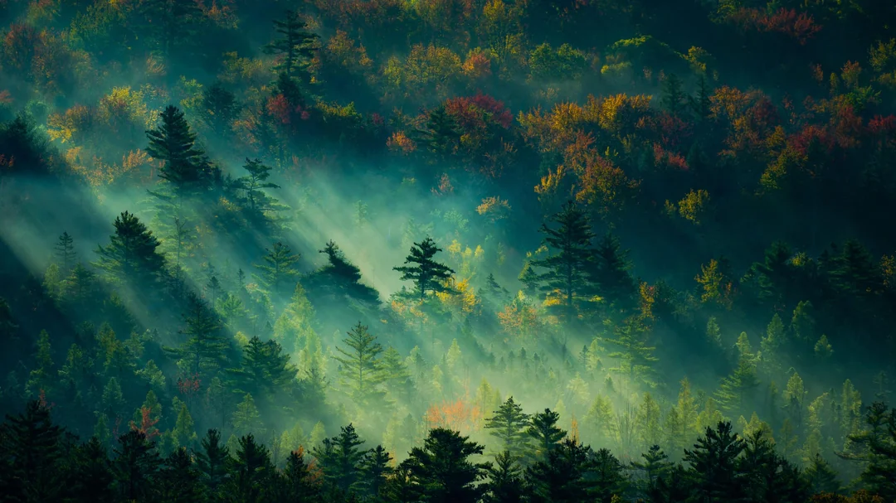

Bynatasja
Ruimte voor
jouw verhaal.
Een creatief ecosysteem voor ondernemers, dromers en ontdekkers. Strategie, design, woorden en reizen — verbonden door één visie.
Ontdekde werelden↓

WITH
SOUL
01 — Where the wild meets the intentional
Een huis met meerdere deuren
Niet harder.
Wel echter.
Ik geloof dat een merk pas blijft hangen wanneer het ergens voor staat. Daarom combineer ik helderheid met gevoel, ambitie met rust en strategie met een verhaal dat écht van jou is.
Lees mijn verhaal ↗The house of Bynatasja
Vier werelden.
Eén hart.
Kies de deur die vandaag bij je past.

Bynatasja
Je hoeft niet
in één hokje
te passen.
Jouw werk mag meerdere kanten hebben. Jouw merk mag ademen. Ik help je om de rode draad zichtbaar te maken — zodat alles wat je doet als één geheel voelt.
Ontmoet Bynatasja ↗Van idee naar aanwezigheid
Met aandacht
gemaakt.
Luisteren
We zoeken naar wat er onder de vraag ligt.
Vormen
We vertalen jouw essentie naar richting en design.
Bewegen
Je gaat naar buiten met een merk dat klopt.